Contents
- Normal Construction
- Anchored Construction
- 2.09 Anchored Production
- New Dolls: August 2022
- New Dolls: June 2022
- New SGs: April 2022
- New Dolls: February 2022
- Notes
Normal Construction#
Most probabilities to do with doll crafting can be done in one line on a calculator. You can find per-craft probabilities on gfdb, though don't be fooled by odd voodoos with tiny sample sizes - the true rate could easily be two or three standard deviations below the mean listed. For some reference numbers, I'll assume a 0.78% rate for Type88 (neglecting CR). Probability math is generally easier using a scale of 0 (0%) to 1 (100%), so 0.78% would be 0.0078.
Letting \( p \) be the rate of your doll of interest,
- The chance of you getting a doll on any specific roll is \( p \) (example: 0.78% or 0.0078).
- The chance of you not getting a doll on any specific roll is \( 1-p \) (example: 99.22%).
- The chance of you not getting a doll in \( n \) rolls is \( (1-p)^n \) (example, 100 rolls: 0.9922^100=45.7%).
- The chance of you getting at least one copy in \( n \) rolls is \( 1-(1-p)^n \) (example, 200 rolls: 1-0.9922^200=79.1%).
It's important to keep in mind that dice have no memory. Suppose you've crafted for Type88 199 times with no success. The probability of getting her on your next roll is still 0.78%, not 79.1%. The probability of getting at least one in the next 200 rolls (for 399 total rolls) is 79.1%. If you still haven't gotten her: that's rather unlucky (will happen to ~4.4% of people), but the odds of getting her on each successive craft remains 0.78%.
Some visual examples using a decent 5-star rate:
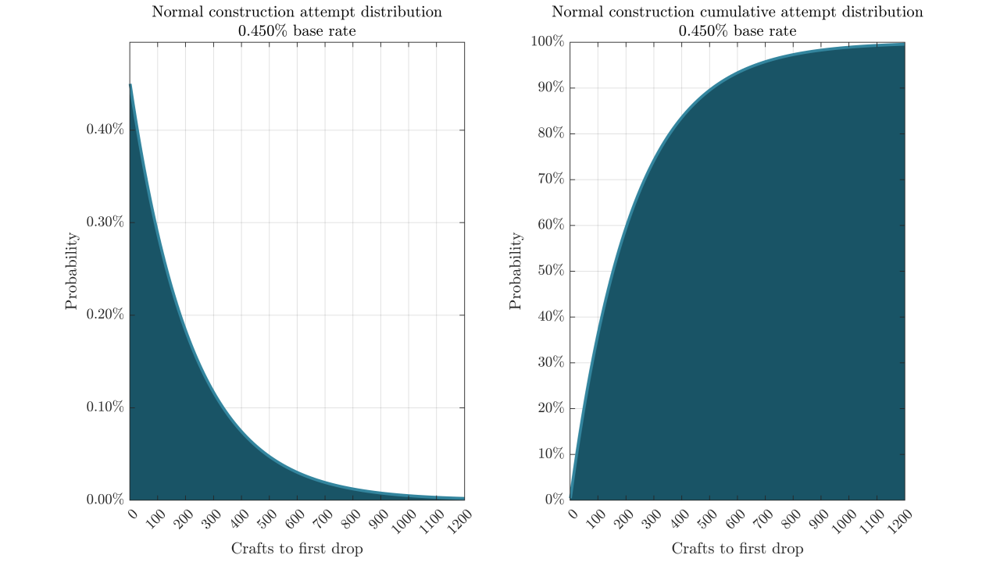
Left: This how many people will have gotten their first drop on exactly craft \( x \). Right: by \( x \) crafts, the percent of people who will have already gotten the doll (the cumulative distribution). Not pictured: the probability of getting a copy of the doll (not necessarily the first) on craft \( x \) - it would be a flat line, with a height corresponding to its rate per craft.
A little over half the players will have gotten this doll within 200 crafts, but there's a long tail - some 7% of players still haven't seen one by 600 crafts, and there would be some people out past 1000 crafts with no luck.
Anchored Construction#
Introduced with the 2.08 client, anchored construction adds a sort of pity system. Per introductory rateup event, you can pick one doll. You start off with some small percent chance to get them, but with each failed craft it increases by a set increment. While the increment is small enough to take a long time to reach 100%, your odds of succeeding before that vastly increase (imagine once it gets to 50% - how many of those in a row can you realistically fail?). In other words, pay no mind to the number of crafts it would take to reach a 100% per-craft chance, or even the much lower pity cap.
This is an extra system on top of the normal new production doll rateup system. You can still craft for all these dolls normally.
For comparison, taking the same base rate as above and adding an arbitrary increment:
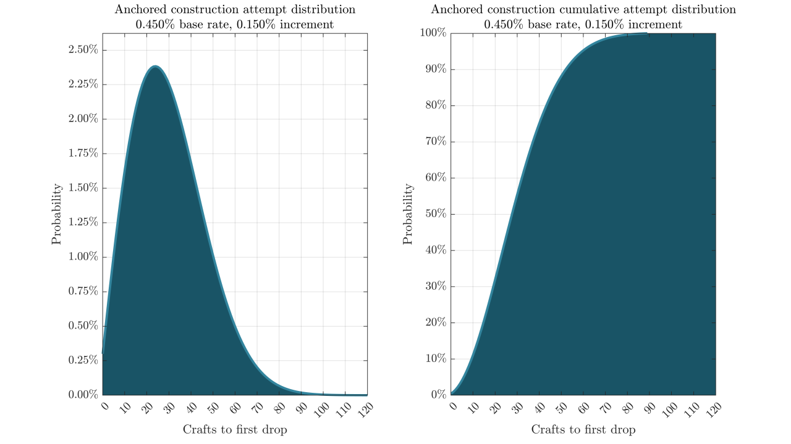
Note the tremendous shift in x-scale to make this readable. Not pictured: the odds that any individual craft drops the doll. It's a linear increase, so that plot is rather trivial (this is with a 0.6% rate and 0.08% increment).
{kind=link}
So anchored constructions massively improve your odds. Now, virtually everyone has gotten their target in under 100 crafts, with most of them doing so in 40-60.
You can only use anchored construction on one doll per batch, and this feature is only available with new releases. It's generally preferable to save anchored construction for last if the pools overlap - you could get one doll while crafting for another. To minimize resources costs, use it on rarer/more expensive dolls (MGs, not HGs).
A few general notes on the system:
- 5-star non-SG dolls take 120 crafts for hard pity. 4-star non-SG dolls take 50 crafts for hard pity.
- SGs take 35 and 20 crafts, respectively. The increased cost of heavy production still makes this costly.
- The base rates of each doll in anchored production seems to correlate with their true rate in standard crafting recipes, despite Mica's insistence they have no relation.
- The 2.09 new-player anchored productions are all fixed to 30 crafts for hard pity.
2.09 Anchored Production#
It's hard to give universal advice on this one, as there are many different circumstances and armories players will have. General thoughts:
- It's hard to have too many Grape (Carcano M91/38) dupes for ranking.
- 416 is the best grenade AR, and is useful for 12-4E dragging. G11 is the best DPS AR.
- AK-15 has an amazing future mod. Vector is useful for 13-4 dragging (but is outperformed by Uzi/PP-19 mods for general use).
- Negev, PKP, and RPK-16 are decent and expensive to obtain otherwise.
- Suomi has an excellent mod in the very distant future.
- AN-94, WA2000, Lee Enfield, C-MS, and P90 are decent units but are replaceable.
- Zas M21, AK-12, and Kar98k have no significant uses.
- M950A, Welrod, and Contender are cheap to craft. Don't anchor them.
These are a bit more likely than usual to run to hard pity, though 30 crafts is cheap anyways. Two examples:
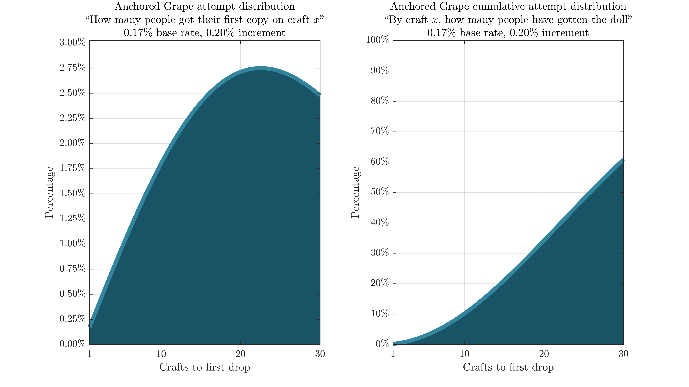
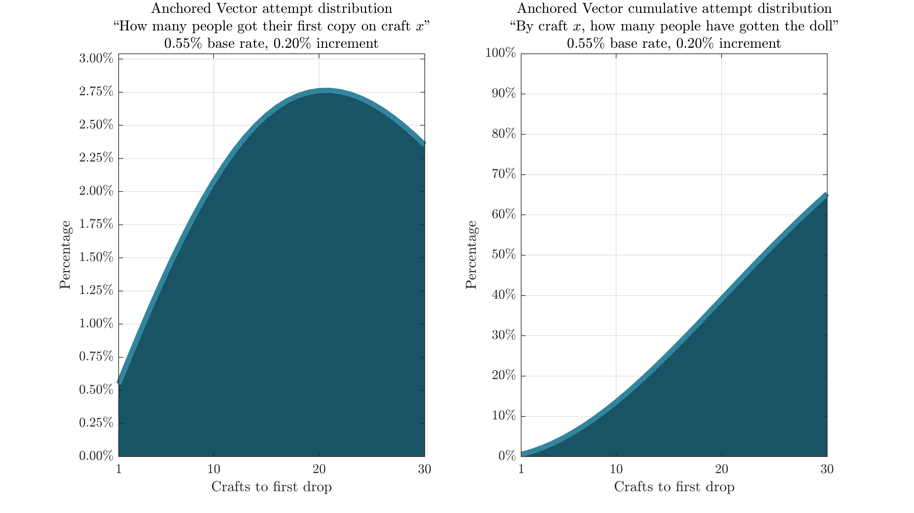
I'm investigating whether or not the 4/5* drop rates are significantly different here than in normal crafting. If you'd like to contribute your data, please do check out this form. If you already did your crafting and forgot your results, but have GFAlarm saving production data, results are saved in the production csv as "WISH-NORMAL".
New Dolls: August 2022#
This batch only contains three dolls: SCR (5* AR), ZiP .22 (4* HG), and Vigneron M2 (4* SMG). ZiP is the most useful doll of the bunch, but anchoring a 4* HG is quite silly. Anchor SCR to avoid 5* AR hell, roll for ZiP .22 with dailies/in rateup, and decide how you feel about Vigneron (almost surely collection at best).
SCR's base rate is 0.44%, making her pretty much indistinguishable from HS.50's chart below.
New Dolls: June 2022#
This batch contains four dolls: HS.50, SR-2, AK-74M, and CZ 100. HS.50 is recommended to anchor for general gameplay, maybe SR-2 if you're big on Theater. As standard production 4-stars, AK-74M and CZ 100 are easy enough to obtain through normal crafting.
As usual, charts for each doll:
HS.50
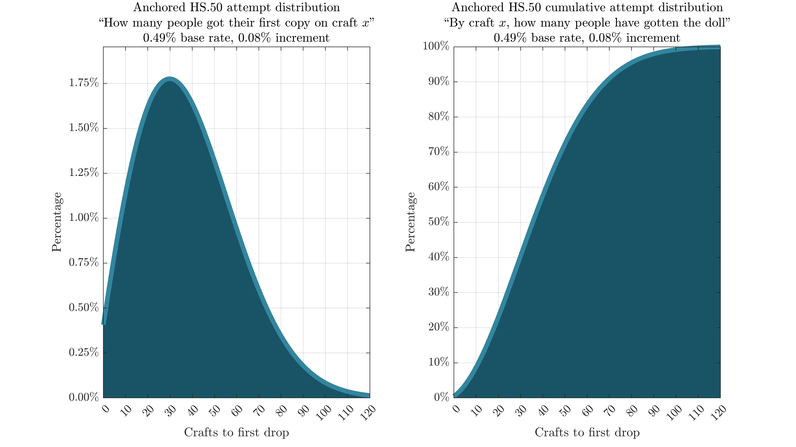
SR2
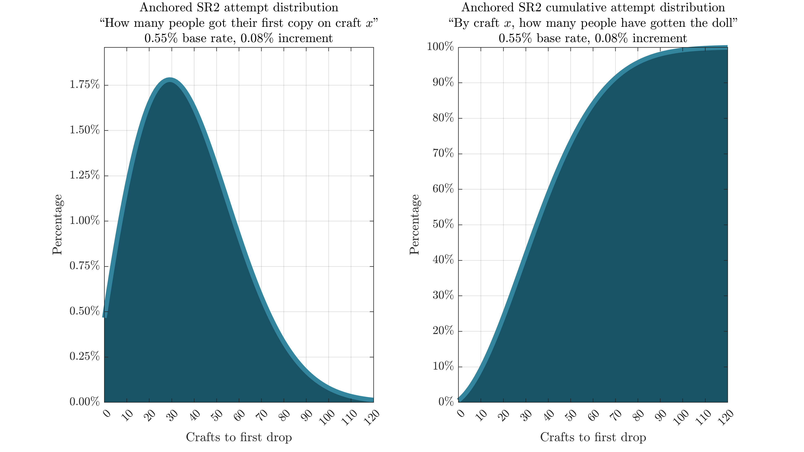
AK74M/CZ100
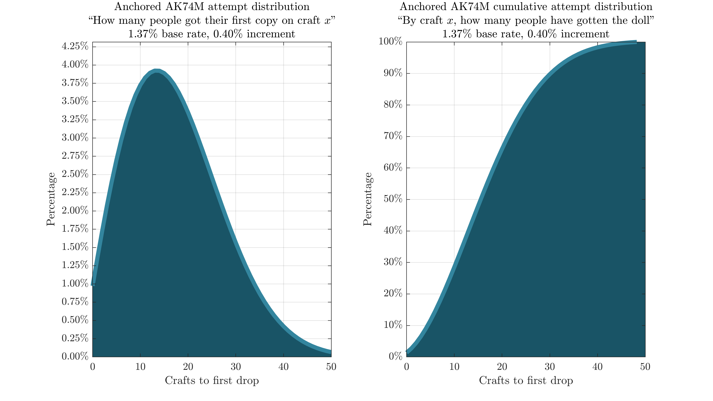
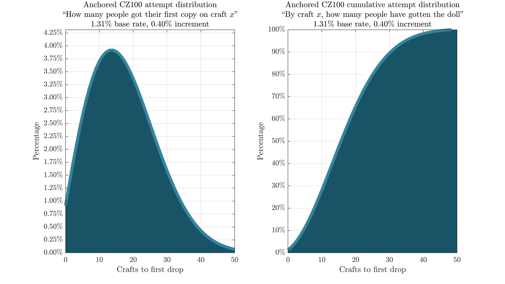
New SGs: April 2022#
SG production has always been stupidly expensive. Anchored production softens the blow a bit - there's a way to ensure at least one success - but not by too much. Unlike regular doll anchors, the odds of getting the targeted SG before hard pity are significantly lower and the total resource cost is far higher.
M26-MASS/FO-12
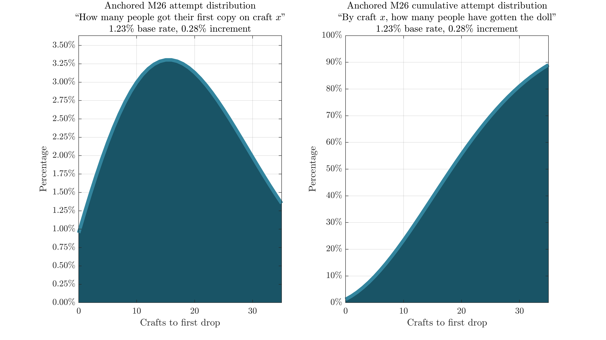
Supernova/MAG-7
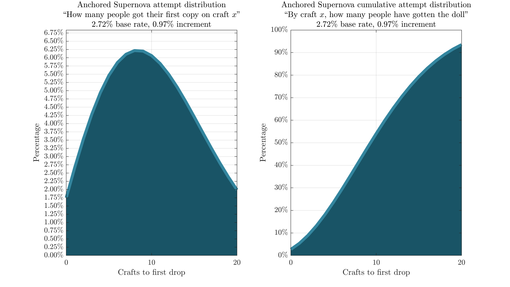
FO-12 and MAG-7 have the same parameters as M26-MASS and Supernova, respectively.
The hard pity is at 35 crafts for a 5-star (280/35/280/140k resources), and 20 crafts for a 4-star (160/20/160/80k resources). A few strategies to consider:
- If you are around the hardcap on resources and want to minimize True Core Mask expenses, target one of the 5-star SGs and exchange for the other with the anniversary TCM. This runs the risk of missing either or both of the 4-star SGs.
- If you don't have 300k MP/Rations to spend and/or don't want to end up in low-rarity SG hell, you'll generally be best off targeting Supernova (the more useful 4-star SG) and exchanging for the 5-star SGs with TCMs.
- If you have ~300k MP/Rations and aren't concerned with TCMs, you could consider rolling SGs for a bit (staying above 160k MP/Rations) and seeing if you roll one of the 4-star SGs. Then, anchor the other one. This improves your odds of getting both 4-star SGs and not having to bother with SG production again for a full armory.
New Dolls: February 2022#
The doll batch released on February 22 (RPK-203, SIG MCX, FX-05, AR-57, and PPD-40) was the first time on EN we got to use this system. Following are the probability charts for each anchored construction option, alongside charts for their in-rateup standard crafting chances.
RPK-203
SIG MCX
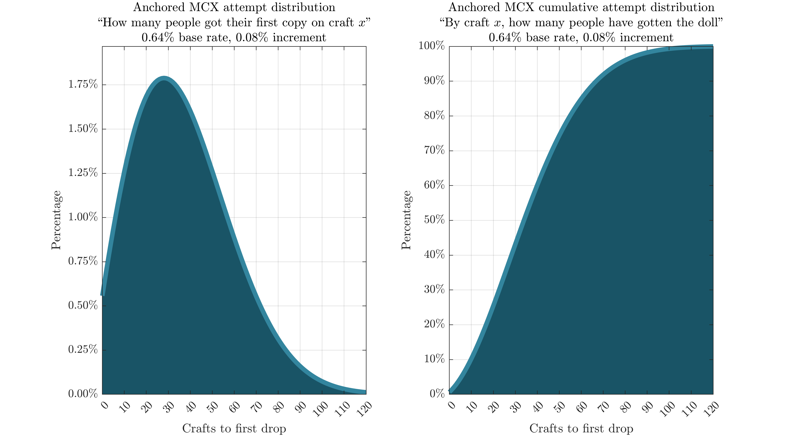
FX-05
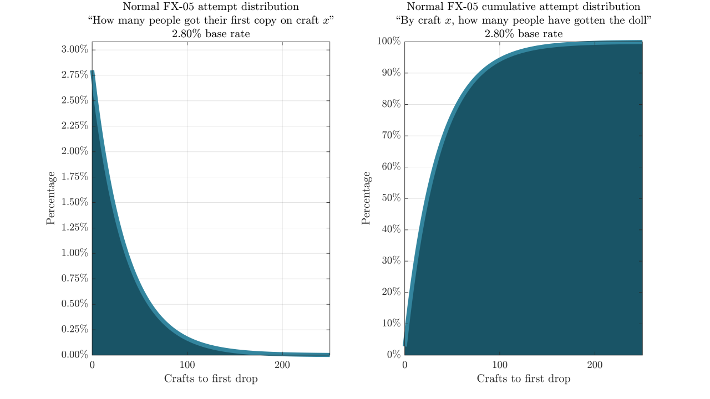
AR-57
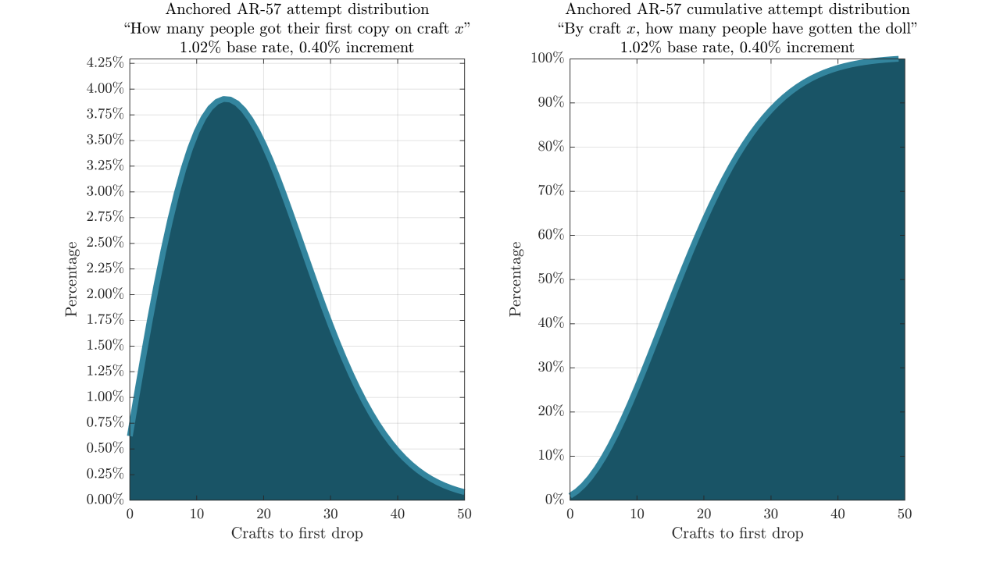
PPD-40
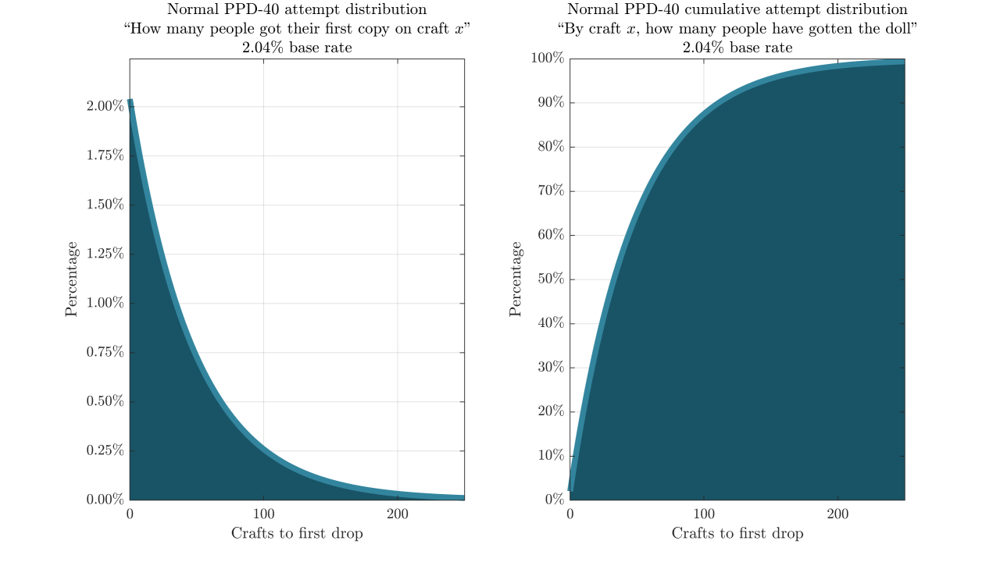
Recommendations
As the most expensive and generally most useful doll in the batch, I would generally recommend starting by using anchored construction on RPK. The other dolls can be rolled for afterwards, or as targets for daily constructions. It's even possible to get them while rolling for RPK.
Notes#
- Compared to official recipes (some combination of 400/400/100 and 200 parts), 400/400/91/30 and its permutations appears to have near-identical rates. 170 parts/craft will add up over time, especially when crafting decent amounts of fairies, so I recommend the cheaper one.
- No other voodoo recipes have strong evidence supporting their use.
- If you have many recipes that have lots of variability (low sample size voodoos) and sort them by mean rate, the top ones are going to be the momentarily lucky ones. It's unlikely for their true rate to even match the displayed mean - one or two standard deviations below that is much more plausible.
- Fairies are generally more important than dolls. Don't waste all your resouces crafting for a useless trophy when you could be developng fairies that make your best teams even stronger.
- A true core mask is given out with each major event and during the anniversary, which you can exchange for any craftable 5-star doll. This is best saved for shotguns (LTLX) due to their high cost, though it may be justifiable to use on an exceptionally rare, highly meta-relevant doll (Carcano M91/38).
- The base rates of dolls in anchored construction appears fairly consistent with their standard production rates.
- The displayed increment values are not exact - their true value seems to be slightly higher, and is simply truncated on the crafting screen. The charts above use my best estimate for their true increment, though the difference is incredibly minor.